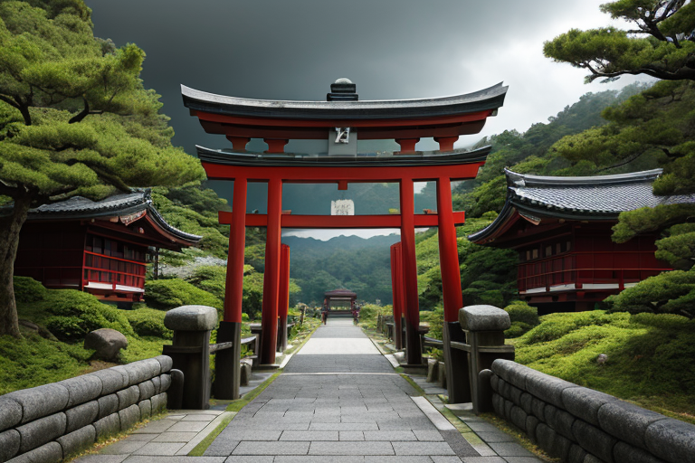
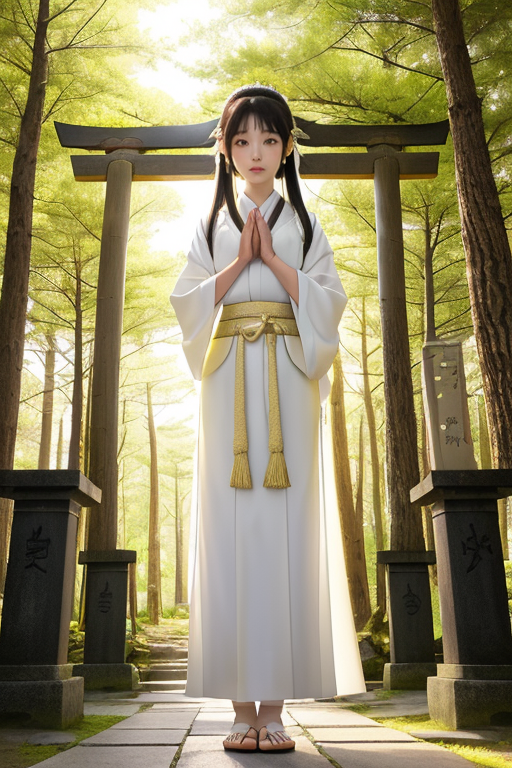
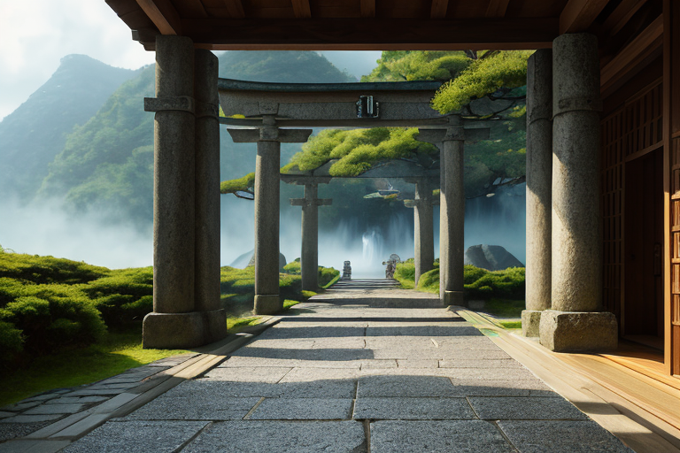
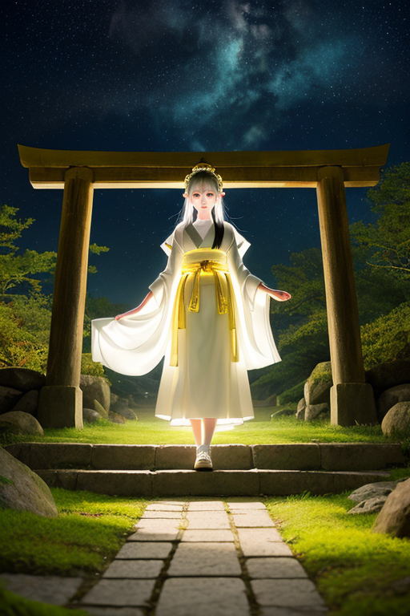

第一章 現実の三重
あなたはまだ気づいていない。この土地にも、王がいることを。
伊勢神宮の森は、静まり返っていた。二十年に一度の式年遷宮が終わり、新たな神殿が神々しい白木の輝きを放つ。参道には、お伊勢参りの人々が途切れることなく続き、赤福を頬張り、伊勢うどんを啜る。彼らの祈りは、家族の健康や商売繁盛、あるいはただの無事を願う素朴なものだ。熊野古道の伊勢路を歩く巡礼者の足音は、千年の時を刻む。
その祈りの波、巡礼のリズムは、この土地の地盤そのものに染み込んでいる。しかし、その深い地中では、プレートが沈み込み、歪みが蓄積されていた。三重は、南海トラフの巨大地震に最も晒される県の一つである。豊かな志摩の海、鳥羽の真珠筏、松阪の平野、全てが巨大な力の前では無力に思える。
祈りは、誰のため？ 神への捧げものか、自身の安心のためか。その問いが、森の静寂の中に、重く垂れていた。

第二章 歪みの兆候
熊野古道、伊勢路の石畳は、無数の巡礼者の足裏で磨かれている。その振動は微かだが、地中の歪みセンサーであるイセリアには、異質なノイズとして感知された。通常の巡礼波とは違う、焦りと不安の周波数だ。
「お伊勢参り」の文化は、江戸時代の爆発的流行以来、人々の「願い」をこの地に集積させてきた。しかし現代、その願いの質が変わっていた。SNSに映える写真のため、チェックリストのため。速さと効率が優先され、深い祈りは希薄になっていた。それは、神域を安定させる聖なる波長を、かすかに乱していた。
サンクティアが厳粛な面持ちで報告する。「祈りの純度が、0.3%低下。これは、地殻の微小な応力集中パターンに影響を及ぼします」。神域王ミエリアは、伊勢神宮の森を見つめた。式年遷宮というリセットのリズムが、人の心の変容には追いつかない。歪みは、地中だけではなかった。

第三章 王の葛藤
熊野古道、伊勢路の石畳は、巡礼者の足音で磨かれていた。だが、その足音の間隔は短く、息づかいには、かつての苦行と歓喜の狭間にあるような深みが感じられない。イセリアが報告する。「巡礼波、観光化によるノイズ増加。保護層に微細な乱流が生じています」。これは、地中の歪みを増幅させる恐れがあった。
ミエリアは決断を迫られた。効率化された巡礼を、古式に戻すよう微調整するか。それとも、この新しい「祈り」の形そのものを、王国の基盤として認め、自らが変革するか。赤目四十八滝の水音のように、問いは繰り返された。祈りは、神のためか。自分の安寧のためか。それとも、ただの通過儀礼か。
彼は、鳥羽水族館のジンベエザメが悠々と輪を描く水槽を見つめた。閉じた系の中で完結する均衡。しかし、外の海は常に動いている。神域とは、静態ではなく、流れそのものなのか。ミエリアは、自らの核となる問いと対峙した。祈りは、誰のため？ 答えは、まだ森の奥深くにあった。
第四章 妖精との対話
伊勢神宮の森。外宮の豊受大神宮の杜に、ミエリアは立っていた。空気が清冽で、千年の時間が層を成している。
「王よ」
サンクティアが現れた。その声は、静かな祝詞のようだった。
「あなたは変革を望まれますか。この王国の、祈りの在り方を」
「問いが生まれた。祈りは、誰のためなのか。それがわからなければ、調整は形骸化する」
イセリアが、熊野古道の石畳のような硬質な口調で言った。
「変革は危険です。巡礼の波は、長い年月で安定したリズムです。それを乱せば、歪みの調整そのものが不安定になるかもしれません」
「しかし」サンクティアが続けた。「この国で感情を学んだ私たちは知っています。祈りが、祈る者の内面と無関係であってはならないと。かつての式年遷宮も、形を保ちつつ新たにする変革でした」
ミエリアは目を閉じた。参道を行き交う人々の気配。願い、感謝、そして時には無心の歩み。それら全てが、この土地の「祈り」という名の感情の密度を構成していた。
「リスクは承知している」彼は静かに言った。「だが、調整者たるもの、自らが調整する対象の本質を見失ってはならない。答えは、私が探す」
妖精たちは深く頭を下げた。彼らもまた、王の決断を、祈りのように待っていた。

第五章 微調整と余韻
式年遷宮の前夜、異常な歪みが熊野古道の地下に集積していた。通常の数倍の規模。これを放置すれば、遷宮の儀式そのものが危険に晒される。ミエリアは決断した。歪みを分散させるため、自らの存在の一部を「礎」として地中に定着させる。これが代償だ。彼は感情を獲得し始めたばかりだった。その萌芽を、永続的な調整機能と引き換えにする。
祈りの声が伊勢路に満ちる中、微かな振動が地中を伝った。歪みは分散し、大きな災害には至らなかった。儀式は粛々と執り行われた。しかし、参道の石段に佇むミエリアの姿は、以前より少しだけ透明になっていた。彼は、無数の願いが行き交う空間を見つめる。
「祈りは、誰のため？」
かつては制度のため、秩序のため、と答えた問いが、今は違う響きを持って戻ってくる。巡礼者の無心の歩み。神職の厳粛な所作。それら全てが、祈る者自身のためであり、同時に、この土地の未来への礎であることを、彼は「感じ」た。代償は大きい。だが、この感情の一片を、消えゆく前に知ることができた。
王は微調整を続ける。目立たず、誇張せず。ただ、歴史が動く瞬間の裏側で。
あなたの町にも、王がいる。